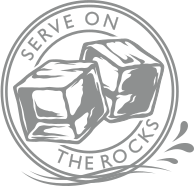
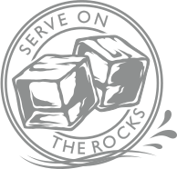
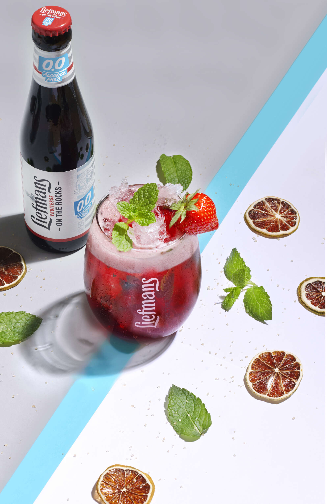
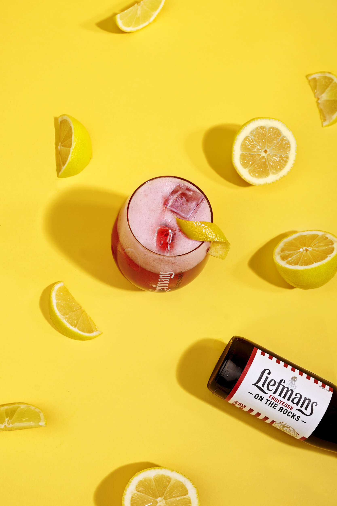
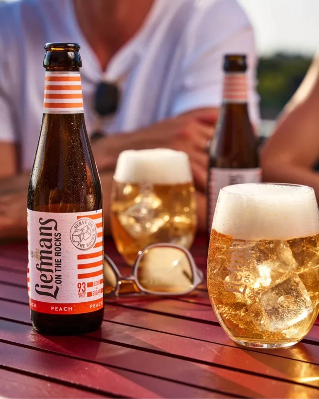
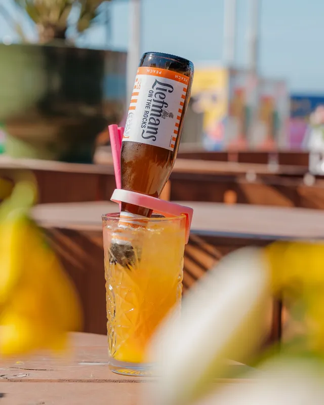
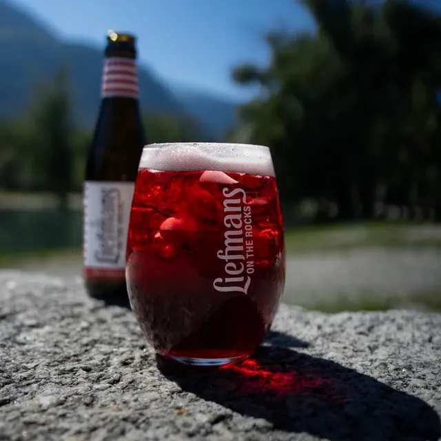
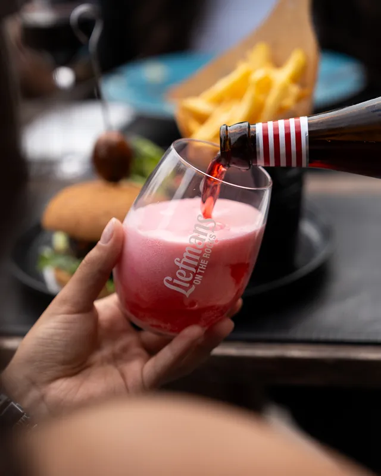
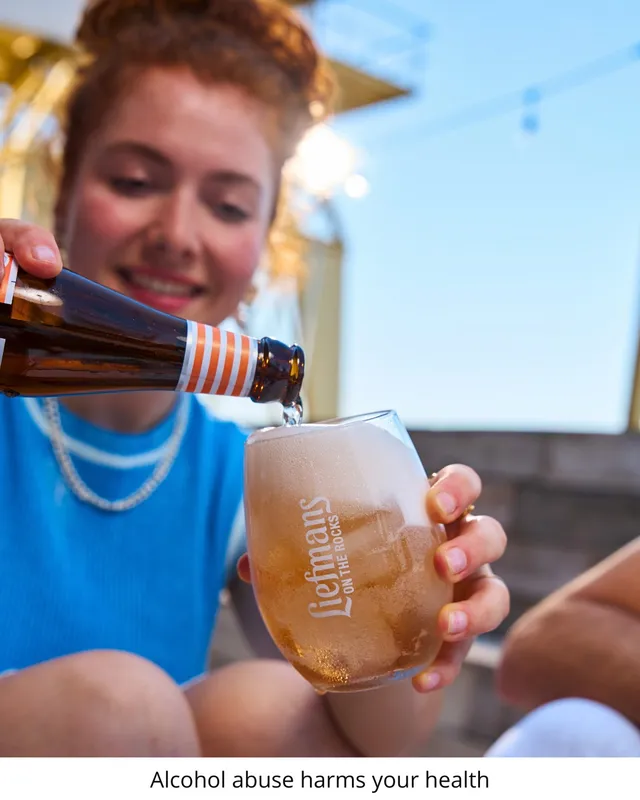

live life on the rocks
met liefmans 0.0
Fun, verfrissing en boordevol smaak maar dan simpelweg zonder alcohol? Yes! Da's Liefmans On The Rocks 0.0. Je geniet dezelfde sprankelende apero-ervaring, maar dan gewoon 0.0. Zo eenvoudig kan het zijn!
Meer info 

liefmans on the rocks
sprankelend aperolbier
Zalig doordrinkbaar, verfrissend aperobier. Met Liefmans On The Rocks geef je smaak aan je apéromoment. Serveren doe je in het speelse glas, altijd On The Rocks én met een smile op je gezicht. Cheers!
Meer info
Liefmans On The Rocks 0.0
Verfrissend alcoholvrij apérobier
Dezelfde vertrouwde Liefmans-smaak maar dan gewoon alcoholvrij: proef zelf de nieuwe Liefmans On The Rocks 0.0. Eindelijk een 0.0 met even veel fun, smaak en verfrissing.
Meer infoLiefmans On The Rocks Peach
Verfrissend en peachy apérobier
Een verfrissend, sprankelend en dorstlessend apérobier met een intense fruitige, knisperende perziksmaak. De lente én de zomer maar vooral veel smaak in je glas!
Meer infoLiefmans On The Rocks Peach 0.0
Peachy alcoholvrij apérobier
De herkenbare perziksmaak van je favoriete apérobier, maar dan alcoholvrij. Proef de zomerse smaken en geniet samen met je vrienden van de nieuwe Liefmans On The Rocks Peach 0.0!
Meer info
It's aporo o'clock
Met Liefmans smaakt je aporo naar méér
Je drinkt m'
On the rocks
Geen apéro zonder ... ijs! Want Liefmans On The Rocks serveer je altijd perfect on ice. Chill, Serve, Cheers = 3 eenvoudige stappen tot het perfecte apéromoment. En dan ... genieten maar! Cheers!
On the rocks glas
Stijlvol en bordevol smaak
Let the good times roll! Ingrediënten voor de leukste apero? Je beste vrienden, het lekkerste apérobier en het unieke Liefmans-glas. Met je glas boordevol ijs geniet je gegarandeerd van een perfect On The Rocks moment. Cheers!
Naar de shopcocktails
perfecte partner voor
Zin in een cocktail die anders is dan alle andere? Gebruik dan bier als basisingrediënt! Liefmans On The Rocks is niet alleen een van de meest fruitige bieren, het smaakt ook heerlijk i n een verfrissende cocktail.
-

Lavender crush
-

Elixer & liefmans
-

Mint & lime
-

Amaretto liefmans
#liefmans
- 
- 
- 
- 
- 